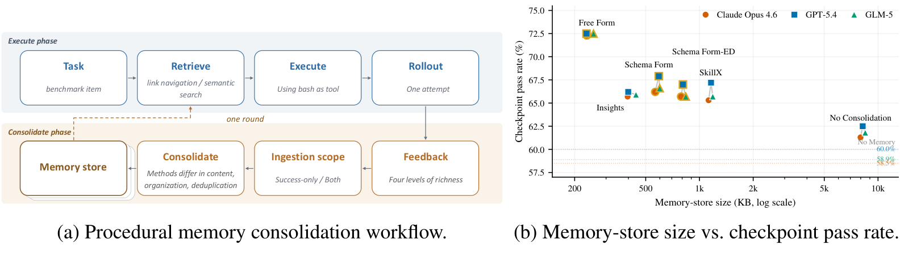
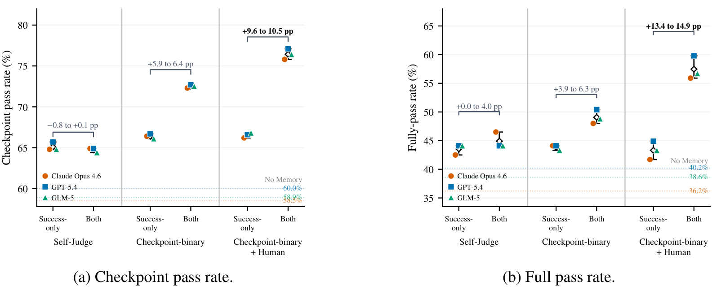
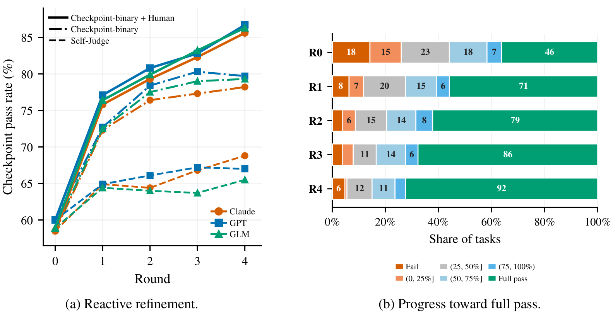

WASP-Mem：让智能体整理操作经验，把人工用在失败诊断
论文原文 ↗论文：WASP-Mem: Let Agent Organize Procedural Memory. Human Spend Effort on Diagnosis
作者：Peizhi Niu、Ge Shi、Vaibhav Gorde、Sarthak Ghosh、Christos Faloutsos、Min Cheng、Kevin Chen；伊利诺伊大学厄巴纳—香槟分校、Amazon
来源：arXiv，2026-11-02；官方页面 ·
为什么智能体积累了经验，仍然不会处理下一次失败
一个智能体第一次进入企业或实验室的软件环境时，即使掌握通用编程知识，也可能不知道内部 API 的特殊行为、输出格式要求，以及某个服务处于异常状态时应该怎样恢复。这些操作知识往往只会在真正执行任务后暴露出来，无法提前全部写进系统提示词。
保存执行记录可以让下次参考，但完整日志里混着重复尝试、临时对象和失败动作。把每段日志分别压缩成经验或技能，又可能产生许多相似条目，彼此没有共同维护。作者关心的是另一种记忆：在某种条件下应该怎样操作，哪里可能失败，失败后如何诊断和恢复。 这称为程序性记忆，也就是能够指导实际行动的经验。
WASP-Mem 将执行轨迹与反馈整理成持续维护、互相链接的 wiki 页面，让智能体自己决定页面如何组织。论文更重要的部分，是把几种常见选择放在相同环境里比较：经验是否需要固定分类、去重由谁完成、失败记录什么时候有用，以及人工应该参与组织知识还是诊断错误。

图1：执行—反馈—经验整理循环，以及不同记忆组织方式的容量和任务表现。
一次真实执行，怎样变成下一次可以用的操作知识
系统从一个空的 wiki 文件夹开始，入口是 index.md。智能体执行任务时，先从入口和语义检索中查找相关页面，再调用工具操作环境。论文在 TheAgentCompany 中让智能体只使用 bash，通过命令调用自建 GitLab、RocketChat、OwnCloud 和 Plane 等服务；一次任务的命令、服务返回和中间状态形成一份执行轨迹。
执行结束后，整理智能体接收这份轨迹，以及对应反馈。它读取当前 wiki，判断新经历应当补进已有页面，还是形成新的操作主题，也可以删掉失效内容、合并或拆分页，再添加页面间的链接。页面只规定标题、简述、修改时间等少量元数据，正文由智能体根据经验决定。
论文给出的一个实际例子是 GitLab 认证：智能体不断把新遇到的分页和错误处理经验写回同一张认证页面，原来的操作逐渐变得完整。另一种逐轨迹提取技能的方法，却产生了 15 张实质相似的认证页面。前者让新证据修订同一项操作知识；后者需要下一次检索时再从重复碎片中找答案。
页面之间的链接也有作用。例如，一项流程可以连接到某种适用条件、相关操作或错误恢复办法。下一次任务到来时，一个只负责检索的智能体先阅读相关页面，把操作知识交给执行者；任务级检索没有找到合适内容时，可按计划中的子目标再查，执行失败也会触发新的子目标检索。这样，查找经验接在真实任务和失败位置上。
一轮包含一批任务执行及其后的经验整理。执行这批任务时，记忆保持固定；整理阶段才按顺序更新页面，最后重建语义索引，使更新在下一轮可见。负责执行的模型参数和工具框架保持不变，学习发生在这些可读、可改写的程序性页面中。
为什么固定格式和显式去重反而会丢掉操作能力
作者比较了自由 wiki、固定页面类型的 wiki，以及增加独立去重步骤的版本。固定格式要求所有页面分为“流程、动作、教训”，填写预设字段，并按预设关系连接；显式去重版先独立提取页面，再由脚本匹配名称、指定合并。
这些规则看起来更整齐，但可能压掉原本有用的差异。作者展示了一个股票分析幻灯片任务：固定格式记下了步骤名称，却遗漏了自由 wiki 保留的代码和排版细节。另一例中，脚本把“用 Python 批改机器学习考试”和“用 Python 提取视频帧”都归成同一个 Python 执行动作，导致两种不同操作被合并。
自由 wiki 的去重发生在阅读已有内容和新证据的同一个判断中。智能体既能复用共同部分，也能保留不同前提和补救办法。作者因此将有效整理理解成一种选择：留下能够改变后续操作的内容，去掉冗余，同时保留真正需要的实现细节。
在 TheAgentCompany 的一轮比较中，自由 wiki 在三种模型上的检查点通过率为 72.3%—72.5%，比表现最好的其他组织方式高 4.6—6.1 个百分点，记忆仅为 233—255 KB。以 Claude Opus 4.6 为例，无记忆为 58.5%，直接检索原始轨迹为 61.3%，固定格式 wiki 为 66.2%，自由 wiki 为 72.3%；相应自由 wiki 为 234 KB，固定格式为 565 KB。
这里的“检查点”是任务内部可以由环境状态确认的操作要求；全部要求通过才算整项任务完成。TheAgentCompany 的实验反复执行同一组 127 项工作任务，用来观察常见流程的熟练度如何提高。另一个 τ²-Bench 零售实验使用互不重合的 74 项训练任务和 40 项测试任务，共享操作规则。自由 wiki 在三种模型上的检查点通过率较无记忆提高 10.9—14.5 个百分点，说明从经历中形成的操作规则也能用于同一业务内的新任务。
失败记录的价值，取决于反馈有没有解释它
作者接着固定自由 wiki，改变提供给整理者的反馈：让智能体自行判断成败；提供外部检查点的成功与失败；或者在检查点结果上再加入人工的自然语言诊断。每种反馈下，又分别只保留成功经验，或同时纳入失败轨迹。
如果只有自我判断，加入失败记录使检查点通过率改变 −0.8 到 +0.1 个百分点，基本没有收益。提供外部检查点结果后，纳入失败记录带来 5.9—6.4 个百分点的提升；进一步提供人工诊断，增益扩大到 9.6—10.5 个百分点。
原因是失败轨迹里同时包含错误动作和可学习的线索。知道“哪个步骤没有完成”，整理者才能把错误位置与操作联系起来；知道“为什么失败、应该怎样改”，才能将它转成后续可用的前提或恢复路径。作者发现，人工诊断的增益主要来自解释失败：如果只摄入成功经验，增加诊断的收益很小。

图2：只有在反馈能解释失败时，把失败轨迹一起纳入记忆才明显提高后续执行表现。
这一点也体现在连续四轮实验中。加入检查点结果和人工诊断后，三种模型的检查点通过率持续提高，到第四轮达到 85.6%—86.7%；只有自我判断时为 65.5%—68.8%。仅一轮外部结果加人工诊断，就比四轮自我判断高 7.0—10.9 个百分点。 以 Claude 为例，整项任务全部完成的数量由最初 46 项，逐轮增至 71、79、86 和 92 项。局部操作变得可靠，使原本卡在中途的任务能够继续完成后续步骤。

图3：不同反馈下的多轮改进，以及任务由部分完成转为全部完成的过程。
对科研智能体最值得借鉴的是什么
这项工作没有要求发明新的记忆存储技术，而是把“经验怎样变成能力”拆成了可以比较的环节。可持续修订的共享页面，比把每次经历独立存成日志、原则或技能，更容易将重复观察整理成一份可操作的知识。固定字段和名称去重则可能同时留下冗余、丢掉细节。
它给出的另一个具体认识是，人工反馈的价值在于诊断。研究人员不必预先设计越来越复杂的经验分类，而可以针对真实失败说明：哪个条件判断错了、遗漏了哪条依赖、为何当前动作不能奏效。随后让智能体把这些说明与其他经历合并，形成下一轮可检索、可执行的程序知识。论文的核心分工因此是：系统提供持久存储、检索、更新和质量检查，智能体组织经验，人把精力用于解释尚未解决的失败。
原始摘要完整中文翻译
大型语言模型智能体难以自动执行复杂的企业流程，因为静态、预先构建的执行框架无法涵盖只有在执行过程中才会显现的专有规则、未记载行为，或依赖环境状态的恢复路径。从智能体经历中积累的程序性记忆，为弥补这一缺口提供了一条无需训练的途径；但与事件记录或语义事实不同，它需要把反复成功的经历和经过诊断的失败整理为可复用的动作与恢复策略。我们提出 WASP-Mem，即基于 wiki、由智能体综合形成的程序性记忆。这是一种轻量而有效的方法，将执行轨迹和反馈提炼成持久、互相链接的 wiki 页面，从而支持智能体持续学习。在 TheAgentCompany 基准上，相比我们比较的最强基线，WASP-Mem 在三种模型上的检查点通过率提高 4.6—6.1 个百分点，同时所需存储减少 57%—61%。我们进一步开展了一项系统性的受控研究，覆盖整理方法、反馈类型、轨迹摄入范围和修订轮数。结果表明，人类定义的模式和显式去重规则等预设知识组织方式，会损害性能，而不是弥补程序性知识缺口。相反，人工诊断能够把失败轨迹转成纠正性知识，推动持续改善：单轮人工诊断的表现比四轮自我判断高 7.0—10.9 个百分点。这些发现指向一种简单的分工：让智能体组织程序性记忆，把人的精力投入最有价值的地方——诊断。